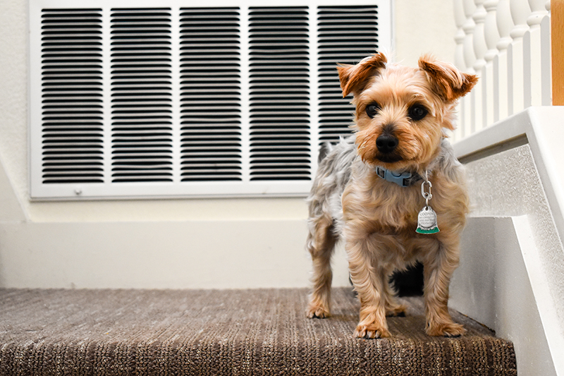
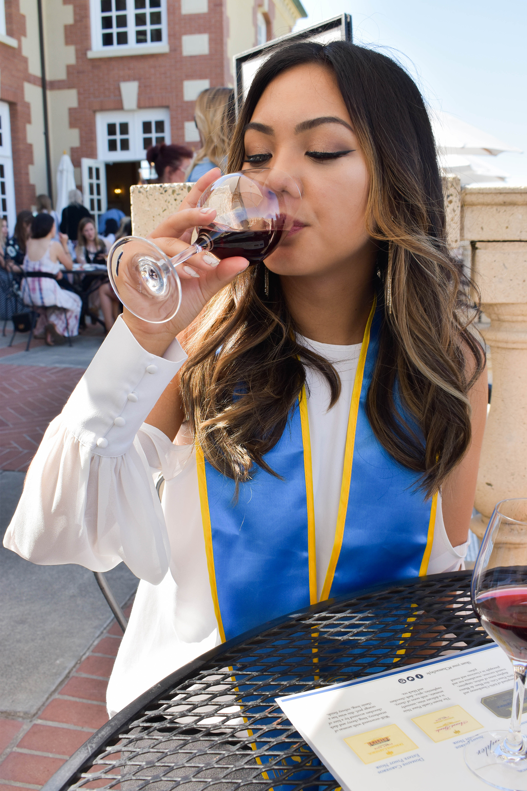
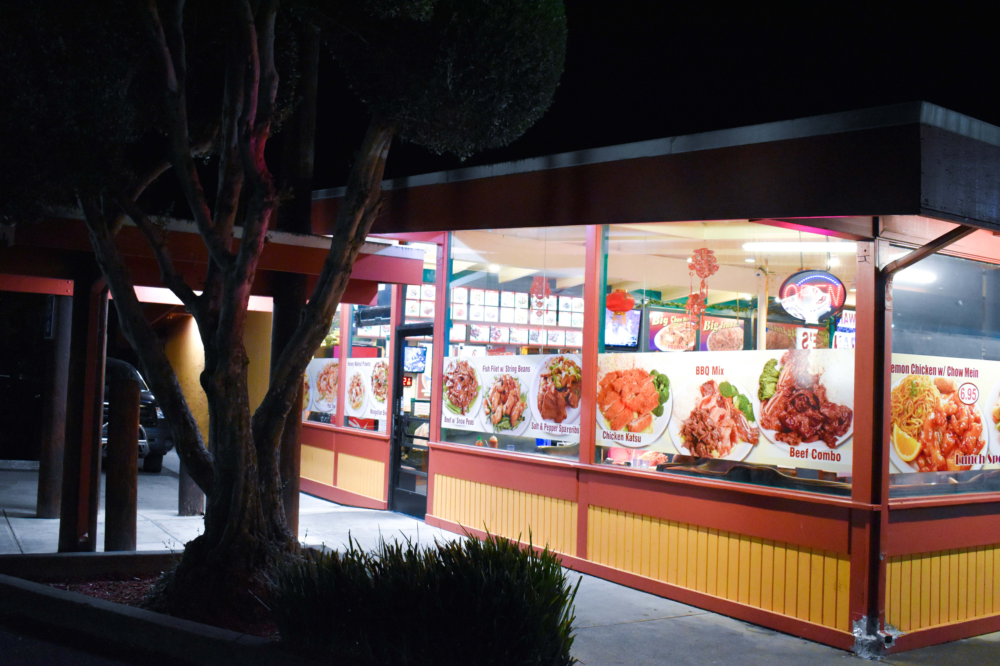

Brent at the Color Factory

Photo of Brent at the Color Factory. He's using the giant green marker to color his shoes. Taken using a Nikon D550, edited in Lightroom.
Brent at the Color Factory

Photo of Brent at the Color Factory. He's laying down in the confetti room while I drop a handful a confetti over him. Taken using a Nikon D550, edited in Lightroom.
Brent at the Color Factory

Photo of Brent at the Color Factory. I had him stand against the blue wall in the confetti room while I threw confetti up into the air and took some shots. Taken using a Nikon D550, edited in Lightroom.
Graduation Photo

Graduation pictures taken for my friends, Karen, Angeline, and Jennifer. This is definitely one of my favorite shots I've taken to date. Taken in Napa, CA, using a Nikon D550, and edited in Lightroom.
Chihuly Glass Garden and Space Needle

A photo of a glass fixture hanging from the ceiling of the Chihuly Glass Museum. In the background, the Space Needle rises out of the foggy sky. Taken on a friend's DSLR, edited in Lightroom.
Cooper!

A picture of Cooper! Standing atop of the staircase, waiting for all the treats for being such a good boy. Taken with a Nikon D550, edited in Lightroom.
Graduation Photo

What better way to celebrate getting your degree? With a glass of red wine of course! A photo of Jennifer, taken in Napa, CA. Used a Nikon D550, edited in Lightroom.
Graduation Photo

It's a picture being taken within a picture that was just taken. A photo of Angeline and Jennifer taking a selfie at Jennifer's graduation in Santa Barbara, CA. Used a Nikon D550, edited in Lightroom.
Brent Graduation Photoshoot

Picture of Brent by a waterway, taken for a graduation photoshoot. Inspiration came from an image I saw floating around on Tumblr. Taken with Nikon D550, edited on Lightroom.
Brent Graduation Photoshoot

>Picture of Brent by a waterway, taken for a graduation photoshoot. Inspiration came from an image I saw floating around on Tumblr. Taken with Nikon D550, edited on Lightroom.
Chicken Katsu from Frannie's

A plate from Frannie's in Hayward, CA. Chicken Katsu plate. Taken with a Nikon D550, edited in Lightroom.
Frannie's Restaurant in Hayward, CA

The store front of Frannie's Restaurant in Hayward, CA. Shot with a Nikon D550, edited in Lightroom.